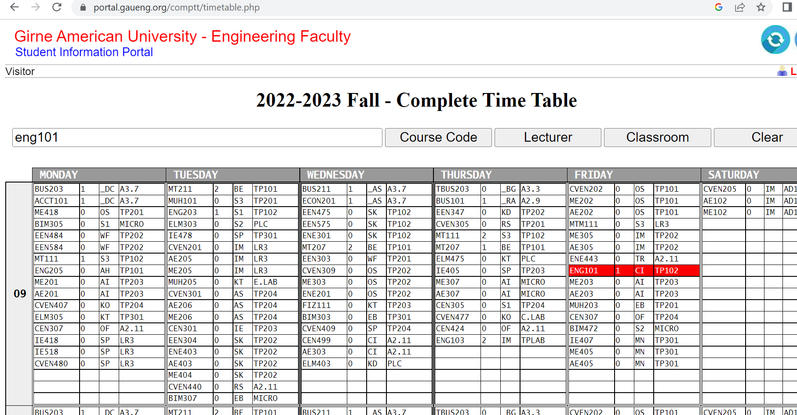
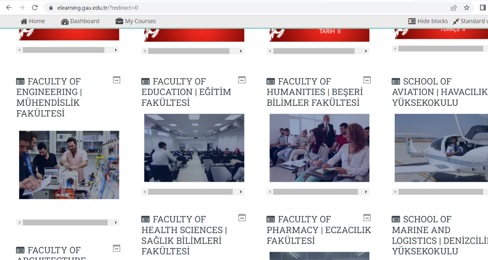
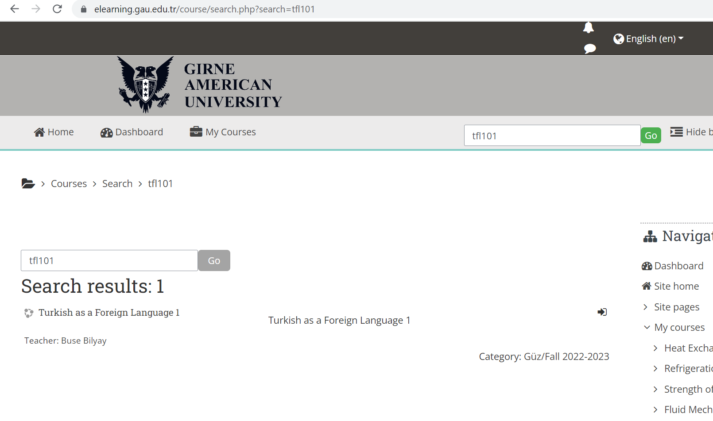
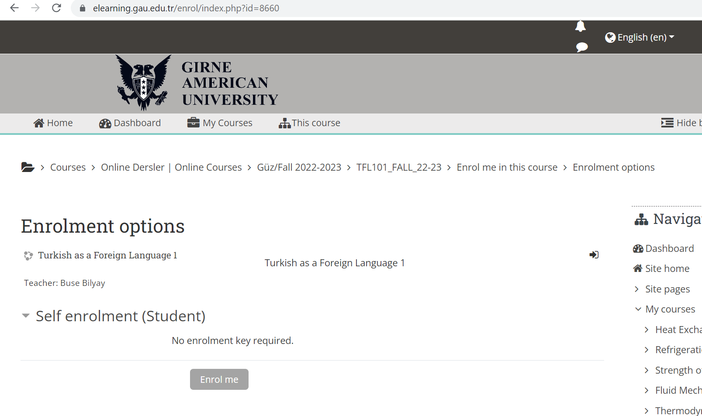

Registration
Who is my advisor?
- Visit student portal.
- Log in with your student number and password (student number).
- Click My Information tab.
- Click My advisor to know your advisor.
- See the faculty secretary in case of a problem.
Can I do registration myself?
- Even though you register courses via the student portal, you still need
your advisor`s approval to complete registration.
- Therefore, see your advisor face to face for approval.
Registration period
- Check out academic calendar for registration
period.
- Make sure you register before registration deadline to avoid late registration
penalty.
Student Email Address
- Visit student services.
- Enter your surname and student number and click send button.
- You will be provided with your student email address and password.
Courses
List of all courses
- Visit departmental schedules.
- Choose your department.
- You will see list of all department courses.
- You will also see course prerequisites. For example, you have to get at
least D for PS111 to take PS112.
Course descriptions
Attendance
- You must attend 70% of the classes otherwise, you will get NG which
means Nil Grade.
- Coefficient of NG is 0.00 as F but NG can be considered worse than F
since you also lose the right to take graduation make-up examination.
Time table
- See your advisor for time table.
Why I don’t see TFL101 in my time table?
- TFL101 is an online course.
- Attend online classes via e-learning.
Information about the classroom/time/lecturer of a course
- Go to Complete Time Table in Engineering
Portal.
- As an example, enter eng101 in the box and click Course Code.
- The box highlighted in red will show you course code, group number, initials of the lecturer, and classroom.

Testing
Letter grades
| Letter grade |
Score interval |
Coefficient |
| A |
90-100 |
4.00 |
| A- |
85-89 |
3.70 |
| B+ |
80-84 |
3.30 |
| B |
75-79 |
2.70 |
| C+ |
65-69 |
2.30 |
| C |
60-64 |
2.00 |
| C- |
55-59 |
1.70 |
| D+ |
50-54 |
1.30 |
| D |
45-49 |
1.00 |
| F |
0-44 |
0.00 |
| NG (Nil Grade) |
- |
0.00 |
| S (Satisfactory) |
- |
0.00 |
| U (Unsatisfactory) |
- |
0.00 |
How do I check out exam grades?
- Visit student portal and log in.
- Click My Courses tab.
- Click Current Grades to know your grades.
How successful am I?
- After every semester, your Cumulative Grade Point Average (CGPA) is
calculated based on your letter grades.
- The courses with higher credits will have more weight on your CGPA.
- Your CGPA is calculated out of 4.0. For example, if you get A from all of
your courses your CGPA will be 4.00 out of 4.00.
How do I graduate?
- Each course has a credit. You will earn the credit by passing a course.
- Once you earn enough credits, you fulfill one the requirements to graduate.
- Visit specific department in departmental schedules to see
required credits to graduate.
- For example, for Computer
Engineering, you have to earn 132 credits.
- Keep your CGPA above 2.0. Students who plan to do Master and PhD degrees are encouraged to have at least 3.0
CGPA (2.5 for some universities)
on graduation.
Attending exams
- You need exam cards to attend midterm/final/make-up/resit exams.
- Get your exam card from faculty secretary.
- Please read Exam Rules and Regulations.
How do I follow announcements?
Online resources
e-learning is useful to access online resources such as assignments and exams
and also attending online classes and quizzes.
Log in
- Visit e-learning website.
- Click Log in in upper right corner.
- Use student email address and password to log in.
How to enroll in a course

- Search for name of the course you want to enroll in.
- In this example, name of the course is tfl101.


How do I attend TFL101 class?
- In order to join online classes, download and install Zoom.
- Log in to e-learning.
- Choose TFL101 in My Courses drop down menu.
- Click the link provided by the lecturer.
How TFL101 is graded?
- You either get S (Satisfactory) or U (Unsatisfactory).